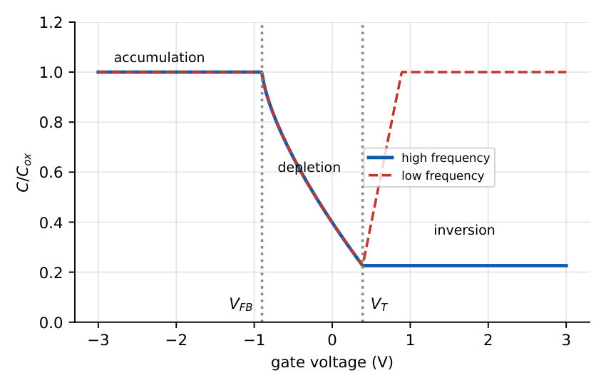
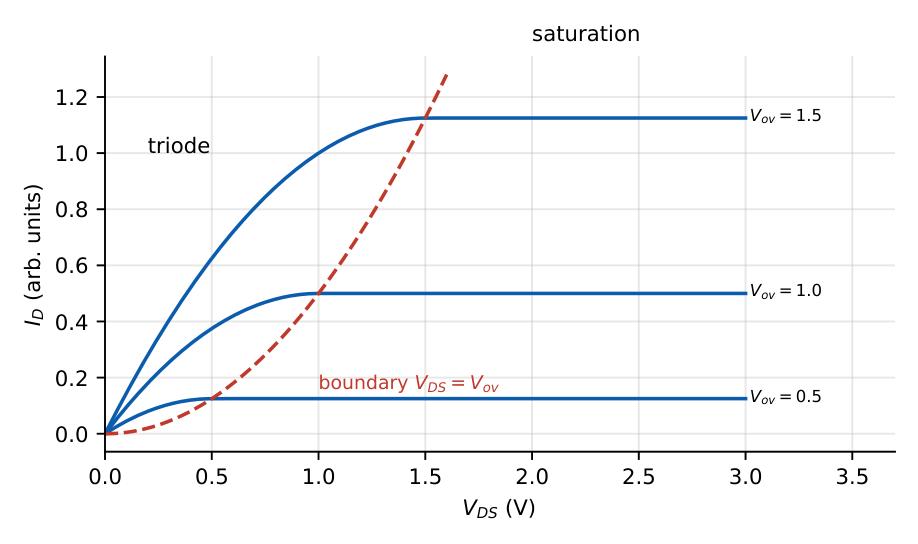

MOS Capacitor and MOSFET Operation
In this chapter
MOS capacitor regimes and C–V curve, threshold voltage formula, drain-current equations in triode and saturation, channel-length modulation, body effect and sub-threshold slope. Numerical \(I_D\), \(g_m\), \(r_o\) and \(V_T\) problems are routine.
8.1 The MOS capacitor
A metal (or heavily doped poly-Si) gate, an oxide of thickness \(t_{ox}\) and a semiconductor substrate. Take a p-type substrate (\(N_A\)) as the reference. The Fermi potential is \(\phi_F=V_T\ln(N_A/n_i)\).

| Gate voltage | Regime | Surface condition |
|---|---|---|
| \(V_G<V_{FB}\) | accumulation | holes pile up at the interface |
| \(V_{FB}<V_G<V_T\) | depletion | holes pushed away, ionised acceptors form \(Q_d\) |
| \(V_G>V_T\) | inversion | electrons form a channel (\(\psi_s\ge2\phi_F\)) |
Oxide capacitance per area: \(C_{ox}=\dfrac{\varepsilon_{ox}}{t_{ox}}\) (\(t_{ox}=10\) nm: \(3.45\times10^{-7}\) F/cm\({}^2\) \(=3.45\) fF/\(\mu\)m\({}^2\)).
Maximum depletion width at the onset of strong inversion (\(\psi_s=2\phi_F\)): \(W_{max}=\sqrt{\dfrac{2\varepsilon_s(2\phi_F)}{qN_A}}\), \(\ Q_d=-qN_AW_{max}\).
Flat-band voltage: \(V_{FB}=\phi_{ms}-\dfrac{Q_{ox}}{C_{ox}}\) (\(\phi_{ms}\) metal–semiconductor work-function difference, \(Q_{ox}\) fixed oxide charge).
Threshold voltage (n-channel): \(V_T=V_{FB}+2\phi_F+\dfrac{\sqrt{2\varepsilon_sqN_A(2\phi_F)}}{C_{ox}}\).
Capacitances: accumulation \(C=C_{ox}\); depletion \(C=\dfrac{C_{ox}C_d}{C_{ox}+C_d}\) with \(C_d=\varepsilon_s/W\); minimum \(C_{min}=\dfrac{C_{ox}(\varepsilon_s/W_{max})}{C_{ox}+\varepsilon_s/W_{max}}\). In inversion at low frequency \(C\to C_{ox}\) (minority carriers follow); at high frequency (or deep depletion) \(C\) stays at \(C_{min}\).
\(N_A=10^{17}\), \(t_{ox}=10\) nm, \(V_{FB}=-0.9\) V. \(\phi_F=0.0259\ln(10^{17}/1.5\times10^{10})=0.407\) V, \(2\phi_F=0.814\) V. \(W_{max}=0.103\,\mu\)m, \(|Q_d|/C_{ox}=0.476\) V, so \(V_T=-0.9+0.814+0.476=0.39\) V. \(C_{min}/C_{ox}=0.226\). Positive oxide charge or a lower work-function gate shifts \(V_T\) negative; substrate doping up raises \(V_T\).
8.2 MOSFET operation
A MOSFET adds a source and drain (n\({}^+\) for n-channel) at the two ends of the channel. For \(V_{GS}>V_T\) an inversion channel connects them and the drain current \(I_D\) flows when \(V_{DS}>0\). Define the overdrive \(V_{ov}=V_{GS}-V_T\).

Cut-off: \(V_{GS}<V_T\): \(I_D\approx0\).
Triode (linear): \(V_{DS}<V_{ov}\): \(\ I_D=\mu_nC_{ox}\dfrac WL\left[V_{ov}V_{DS}-\dfrac{V_{DS}^2}{2}\right]\). Small \(V_{DS}\): \(r_{ds}=\left[\mu_nC_{ox}\dfrac WLV_{ov}\right]^{-1}\).
Saturation: \(V_{DS}\ge V_{ov}\): \(\ I_D=\dfrac12\mu_nC_{ox}\dfrac WL V_{ov}^2\,(1+\lambda V_{DS})\).
Define \(k_n'=\mu_nC_{ox}\) (process transconductance, e.g. \(100\,\mu\)A/V\({}^2\)).
p-channel: same with \(V_{GS},V_{DS},V_T<0\) and \(\mu_p\).
Pinch-off. At \(V_{DS}=V_{ov}\) the channel charge at the drain end goes to zero; for larger \(V_{DS}\) the pinch-off point moves toward the source and the voltage in excess drops across the depleted region. In saturation \(I_D\) is nearly independent of \(V_{DS}\).
Channel-length modulation. The effective channel \(L-\Delta L\) shortens with \(V_{DS}\), increasing \(I_D\) slightly: \(\lambda\approx1/V_A'\) (\(V_A'\propto L\)), giving finite output resistance.
\(k_n'=100\,\mu\)A/V\({}^2\), \(W/L=10\), \(V_T=0.5\) V, \(V_{GS}=1.0\) V (\(V_{ov}=0.5\) V).
Saturation, \(\lambda=0\): \(I_D=\tfrac12(100\,\mu)(10)(0.25)=125\,\mu\)A. With \(\lambda=0.1\,\text{V}^{-1}\) at \(V_{DS}=2\) V: \(125\times1.2=150\,\mu\)A.
Triode at \(V_{DS}=0.2\) V: \(I_D=100\,\mu\times10\times(0.5\times0.2-0.02)=80\,\mu\)A.
\(g_m=\dfrac{2I_D}{V_{ov}}=500\,\mu\)S, \(r_o=\dfrac1{\lambda I_D}=80\,\)k\(\Omega\).
8.2.1 Transconductance and output resistance
\(g_m=\dfrac{\partial I_D}{\partial V_{GS}}=\mu_nC_{ox}\dfrac WLV_{ov}=\dfrac{2I_D}{V_{ov}}=\sqrt{2\mu_nC_{ox}\dfrac WLI_D}\).
\(r_o=\dfrac{1}{\lambda I_D}\approx\dfrac{V_A}{I_D}\). Intrinsic gain \(g_mr_o=\dfrac{2}{\lambda V_{ov}}\).
8.3 Body effect
When the source is at a higher potential than the substrate (\(V_{SB}>0\)) the depletion charge increases, raising the threshold: \[ V_T=V_{T0}+\gamma\left(\sqrt{2\phi_F+V_{SB}}-\sqrt{2\phi_F}\right),\qquad\gamma=\frac{\sqrt{2q\varepsilon_sN_A}}{C_{ox}}. \] For \(N_A=10^{17}\), \(t_{ox}=10\) nm: \(\gamma=0.53\,\text{V}^{1/2}\); with \(V_{SB}=2\) V the threshold rises by \(0.53(\sqrt{0.814+2}-\sqrt{0.814})=0.41\) V. The substrate acts as a second gate with \(g_{mb}=\chi g_m\), \(\chi=\dfrac{\gamma}{2\sqrt{2\phi_F+V_{SB}}}\).
8.4 Sub-threshold conduction
For \(V_{GS}<V_T\) the current is not zero: \(I_D\propto e^{qV_{GS}/(nkT)}\) (diffusion). The sub-threshold swing \(S=\dfrac{dV_{GS}}{d\log_{10}I_D}=\ln10\,\dfrac{kT}{q}\left(1+\dfrac{C_d}{C_{ox}}\right)\ge59.5\) mV/decade at 300 K. With \(C_d/C_{ox}=0.3\), \(S=77.5\) mV/dec. A smaller \(S\) (thin oxide, fully depleted SOI, FinFET) gives lower leakage at a given \(V_T\).
8.5 Types of MOSFET
| Type | Channel at \(V_{GS}=0\)? | \(V_T\) sign |
|---|---|---|
| n-enhancement | no | \(+\) |
| n-depletion | yes | \(-\) |
| p-enhancement | no | \(-\) |
| p-depletion | yes | \(+\) |
(i) Saturation is \(V_{DS}\ge V_{GS}-V_T\), not \(V_{DS}\ge V_T\). (ii) \(g_m=2I_D/V_{ov}\) only in the square-law model; for a BJT \(g_m=I_C/V_T\) regardless of the bias point. (iii) In the triode region the factor \(\tfrac12\) is absent from \(V_{ov}V_{DS}\). (iv) Body effect raises \(V_T\) for an n-MOSFET when \(V_{SB}>0\). (v) Channel-length modulation increases \(I_D\); it is not body effect.
\(I_{D,sat}=\tfrac12k_n'(W/L)V_{ov}^2\); double \(W/L\) doubles \(I_D\); double \(V_{ov}\) quadruples \(I_D\). Sketch the boundary \(I_D=\tfrac12k'(W/L)V_{DS}^2\) to decide triode or saturation. Switch on-resistance for small \(V_{DS}\): \(1/(k'(W/L)V_{ov})\).
8.6 GATE problems
Q1. Strong inversion in a p-type MOS capacitor begins when the surface potential is (A) \(\phi_F\) (B) \(2\phi_F\) (C) \(0\) (D) \(V_{bi}\).
Q2. An n-MOSFET is in saturation when (A) \(V_{DS}<V_{GS}-V_T\) (B) \(V_{DS}\ge V_{GS}-V_T\) (C) \(V_{GS}<V_T\) (D) \(V_{DS}=0\).
Q3. Increasing \(V_{SB}\) in an n-MOSFET (A) lowers \(V_T\) (B) raises \(V_T\) (C) leaves \(V_T\) unchanged (D) makes it a depletion device.
Q4. The minimum sub-threshold swing at 300 K is approximately (A) 60 mV/dec (B) 26 mV/dec (C) 120 mV/dec (D) 0.7 V/dec.
Answers: Q1 (B). Q2 (B). Q3 (B). Q4 (A).
Q5. \(k_n'=100\,\mu\)A/V\({}^2\), \(W/L=10\), \(V_T=0.5\) V, \(V_{GS}=1\) V, \(V_{DS}=2\) V, \(\lambda=0\). \(I_D\) is (A) 125 \(\mu\)A (B) 250 \(\mu\)A (C) 500 \(\mu\)A (D) 62.5 \(\mu\)A.
Q6. Same device at \(V_{DS}=0.2\) V. \(I_D\) is (A) 80 \(\mu\)A (B) 125 \(\mu\)A (C) 100 \(\mu\)A (D) 40 \(\mu\)A.
Q7. For \(N_A=10^{17}\) the Fermi potential \(\phi_F\) (\(n_i=1.5\times10^{10}\), \(V_T=25.9\) mV) is (A) 0.21 V (B) 0.41 V (C) 0.60 V (D) 0.81 V.
Answers: Q5 (A). Q6 (A). Q7 (B).
Q8. \(g_m\) (\(\mu\)S) for \(I_D=125\,\mu\)A at \(V_{ov}=0.5\) V: .
Q9. Output resistance (k\(\Omega\)) for \(\lambda=0.1\,\text{V}^{-1}\), \(I_D=125\,\mu\)A (ignore \(V_{DS}\) factor): .
Q10. Threshold shift (V, two decimals) from the body effect for \(\gamma=0.53\), \(2\phi_F=0.81\) V, \(V_{SB}=2\) V: .
Answers: Q8: 500. Q9: 80. Q10: \(0.53(\sqrt{2.81}-\sqrt{0.81})=0.53(1.676-0.9)=0.41\).
Q11. Select the true statements. (A) Channel-length modulation gives finite \(r_o\). (B) The MOS capacitor is in accumulation for \(V_G<V_{FB}\) (p-type). (C) Body effect lowers \(V_T\). (D) Doubling \(W/L\) doubles \(I_D\).
Answers: Q11: (A), (B), (D).
T1. \(C_{ox}\) for \(t_{ox}=5\) nm. T2. Triode vs saturation boundary? T3. Write \(V_T\) of an n-MOS.
Answers: T1: \(6.9\times10^{-7}\) F/cm\({}^2\). T2: \(V_{DS}=V_{GS}-V_T\). T3: \(V_{FB}+2\phi_F+\sqrt{2\varepsilon qN_A(2\phi_F)}/C_{ox}\).
- Regimes: accumulation, depletion, inversion at \(\psi_s=2\phi_F\); \(V_T=V_{FB}+2\phi_F+|Q_d|/C_{ox}\).
- Triode \(\mu C_{ox}(W/L)[V_{ov}V_{DS}-V_{DS}^2/2]\); saturation \(\tfrac12\mu C_{ox}(W/L)V_{ov}^2(1+\lambda V_{DS})\).
- \(g_m=2I_D/V_{ov}\), \(r_o=1/\lambda I_D\); body effect \(\gamma(\sqrt{2\phi_F+V_{SB}}-\sqrt{2\phi_F})\); \(S\ge59.5\) mV/dec.